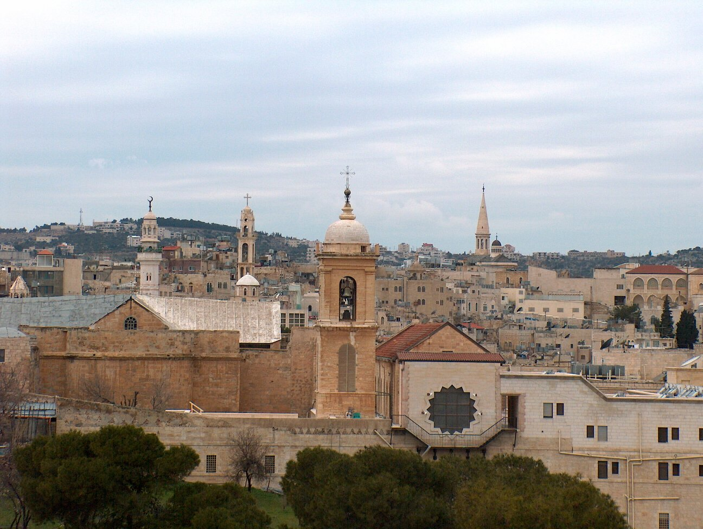

Hebron, one of the oldest cities in the world, is a significant
cultural and religious center. Known
for its rich history, Hebron is home to the Cave of the
Patriarchs, a site revered by Muslims, Jews, and Christians as the
burial place of Abraham. Click for more

Fig2 - Bethlehem City, West Bank, Palestine
Bethlehem, located in the West Bank, is a historic and religious
city known as the birthplace of Jesus Christ, making it a key
destination for Christian.the city has the Church of Nativity, a
UNESCO World Heritage site, and it draws visitors worldwide. Click for more